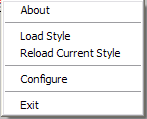
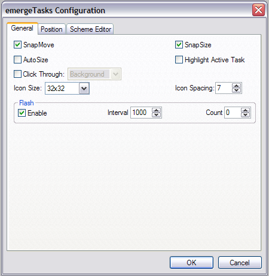
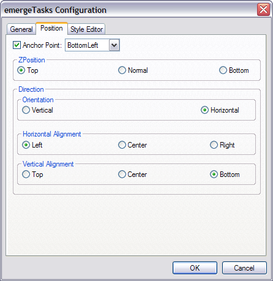

| About |
emergeTasks is the 'Tasks' applet for Emerge Desktop. It displays an icon for each running task in a movable, resizeable window.
| Configuration |
emergeTasks is configured by pressing the Ctrl key and right-clicking on the emergeTasks window. This opens the configuration menu:

About displays the module's version, the current style's path and filename and author.
Load Style allows the user to browse and select a Style File.
Reload Current Style allows to reload the current style after editing.
Configure displays the emergeCommand configuration dialog box.
Exit closes the module. It can be restarted by highlighting it and clicking on the Start  button in the Launch Applet dialog box (see emergeCore).
button in the Launch Applet dialog box (see emergeCore).
After selecting Configure, the configuration dialog box opens. The first tab is General:

SnapMove makes the window snap to the edges of other applets' windows or the edges of the screen when moving it.
SnapSize makes the window snap to the edges of other applets' windows or the edges of the screen when changing its size.
AutoSize keeps the window to a minimum size around the icons. A number may be entered after wrap at to specify the amount of icons per row or column (depending on Orientation in Position tab). The size of the window can no longer be changed by dragging an edge while pressing the Alt key.
Highlight Active Task sets the background of the active program's icon with the "Selected" opacity and color in the Style Editor tab.
Click Through allows clicking "through" the window (i.e. allows clicking on whatever is behind it). It has two modes: Full (the whole window is "transparent" to mouse input), or Background (only the background area is "transparent" but the user can click on the icons in emergeTray, emergeTasks, emergeLauncher, the text in emergeCommand, emergePower, the active mini-window in emergeVWM, the graphs in emergeSysMon).
Important notes: 1) Full Click Through works for any level of opacity, from opaque to fully transparent; 2) Background Click Through automatically sets the background to transparent but does not change the style, this is a known limitation; 3) To manipulate an applet set on Full Click Through, the user must press the Shift key: Shift+Ctrl+LeftClick to move the applet, Shift+Ctrl+RightClick to get the configuration menu and Shift+Alt to resize the applet.
Icon Size gives the choice of 16x16, 32x32 or 48x48 pixel icons. Due to system limitations, 48x48 pixel icons can not be used under Windows 2000.
Icon Spacing defines the spacing in pixels between adjacent icons.
Flash / Enable allows a task icon to flash when the task calls for the user's attention. The Interval between flashes must be set (in milliseconds), and the Count sets the amount of flashes. 0 Count = non-stop flashing.
The configuration dialog box's second tab is Position:

Anchor Point gives the choice of anchoring the window to the monitor's Top Left, Top Center, Top Right, Middle Left, Middle Center, Middle Right, Bottom Left, Bottom Center, or Bottom Right.
ZPosition defines the relative position of the window in the Z axis (i.e. from the screen to the user) and can be set to always on the Top, Normal (behaves as a regular program window), or always at the Bottom.
Orientation defines if the icons are set as a column (Vertical) or as a row (Horizontal).
Independently of the the Orientation, the icons can have three options for Horizontal or Vertical Alignment:
Horizontal Aligment can be set to: align on the Left of the applet (i.e. new items are added to the right), Center (i.e. expand in both directions in relation to the horizontal center), or on the Right.
Vertical Aligment can be set to: Top of the applet, vertical Center, or Bottom.
If Autosize is not selected, when icons reach an edge, they will add a new row or column to the window, depending on Vertical or Horizontal Orientation.
For the configuration dialog box's third tab, see the Style Editor.
| Usage |
Left-clicking on a task icon restores its program window (if minimized), and move the window to the foreground.
Right-clicking on a task icon displays its system menu.
Left-clicking on the active program's task icon minimizes its window.
Double-clicking on the window starts the Windows Task Manager.
To move the window, the user must press the Ctrl key, left-click on the window, and drag it to another location.
To move the position of an icon, the user must press the Alt key, left-click on the icon, and drag it to an other location within the window.
To resize the window (provided that Autosize is not selected), the user must press the Alt key, left-click on one edge of the window, and drag it to a new size.
The window position and size are stored in the applet's xml file, which is located in the User Profile folder under "\Application Data\Emerge Desktop\themes", in a subfolder with the same name as the current Theme. See Theme Manager for more details.